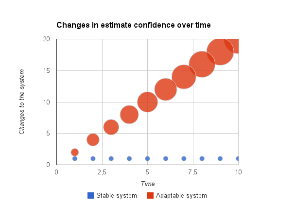

There exist several scales which can be used to estimate development work. Everyone of them can be used for a specific purpose and is not interchangeable. Although they can be transformed to each other with a bit of magic.
Relative estimations are a lot easier than absolute ones. For further information on this topic just ask your favourite search engine. The following examples are absolute size measures:
Compared to relative size measures:
So if I know the correct absolute measure of the comparison reference I am able to easily calculate the estimations for the other items. For example I estimate that the distance between Vienna and Berlin is double the distance between Vienna and Munich. I did a trip to Munich last week so I know that the distance between Vienna and Munich is ~ 350 km. This means the distance Vienna to Berlin should be ~ 700 km (it is ~ 690 km by the way).
In the end the size will not change over time if the system in which the estimated things are existing is not changing. So the distance between Vienna and Berlin will very unlikely change in the near future as Earth (the system where Vienna and Berlin are existing) is very stable. Let's compare that to a software feature. It is best-practice to build a software architecture as changeable/adaptable as possible. So in a optimal scenario the system is changing quite fast. As a result the "correctness" of the size estimates will decline quite fast. This is the Cone of Uncertainty. This means if you have a often changing system and need to estimates for a lot of stuff which will be done in the future, better use empirical data than these estimates. See the chart below for a visualization of this.
This means if there is a difference between the estimator and the implementer this will have a (big) impact on the estimation. Here are some examples:
| Low skill | High skill |
|---|---|
| Junior Programmer | Senior Programmer |
| Car | Jet |
| Small packaging machine | Big packaging machine |
As already mentioned it highly depends on the working entity how much it will cost. In software projects it is hard to forecast a long time into the future who will really do a task. So for planning purposes there are the following choices:
This is often the type of estimation Management (with a big M intentionally) wants when they asked for estimations. The fun part is that the answer most of the time is: It depends. The reason for that will get clearer when we have a look at the parameters influencing duration:
So in order to create a good enough estimate for the duration of a task, the parameters need to be frozen at the time of estimation. This is a quite difficult constraint for long term tasks.
Let's model the question "How long does it take to transport one tiny package from Vienna to Berlin?":
So the duration will be 10 hours. This estimation is highly dependable on multiple parameters. If only one of them changes the whole estimation is off (a lot). This means you want to do this estimation as late as possible so most of the parameters are "fixed".
Estimates deteriorate over time. Additionally the more parameters are to be considered for an estimate the more energy is needed to come up with a meaningful estimate. In general this is an ordering of estimates by their generated value/knowledge:
So think of the Pareto Principle next time you need estimates :-).